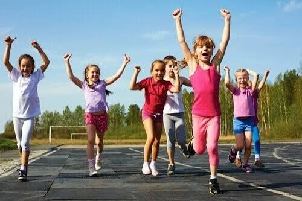
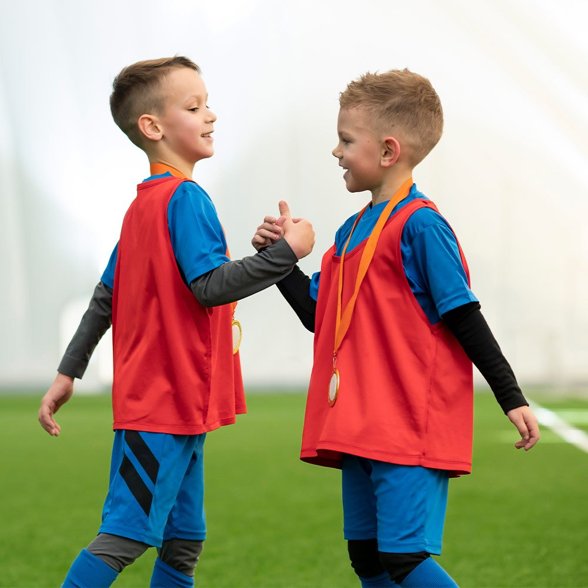
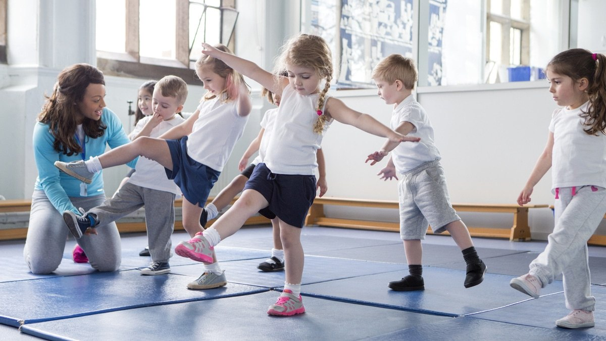

L’idea
Offrire giochi di squadra e attività motorie gratuite nei parchi, con studenti di Scienze motorie e di altri corsi come allenatori e animatori, per favorire inclusione e socialità.
Le attività previste
- Pomeriggi di gioco Incontri settimanali di calcio e giochi di squadra nei parchi del quartiere.
- Studenti animatori Formazione di un gruppo di studenti come guide e allenatori volontari.
- Materiali sportivi Acquisto di palloni, casacche e attrezzature da condividere.
- Giornata finale Un torneo aperto alle famiglie per chiudere il percorso insieme.
Galleria fotografica
Immagini illustrative del tema del progetto.


